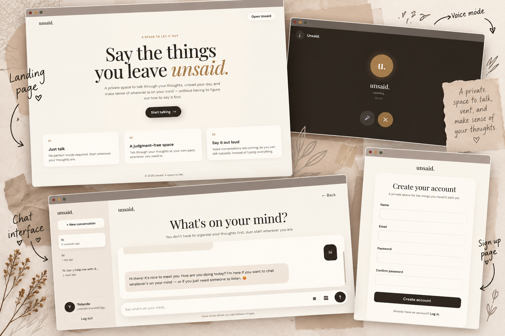

Unsaid
AI CONVERSATIONAL WEB APP
People often bottle up thoughts due to a lack of safe, non-judgmental outlets. Unsaid solves this by offering a private, accessible digital space. Users can freely vent, reflect, and process emotions in real time. It provides an empathetic AI companion whenever you just need to talk. 🌸
Built with
Laravel
PHP
JavaScript
PostgreSQL
OpenRouter AI
Web Speech API